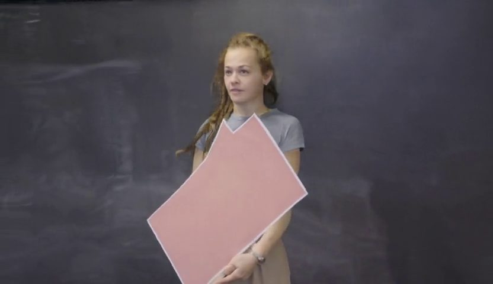
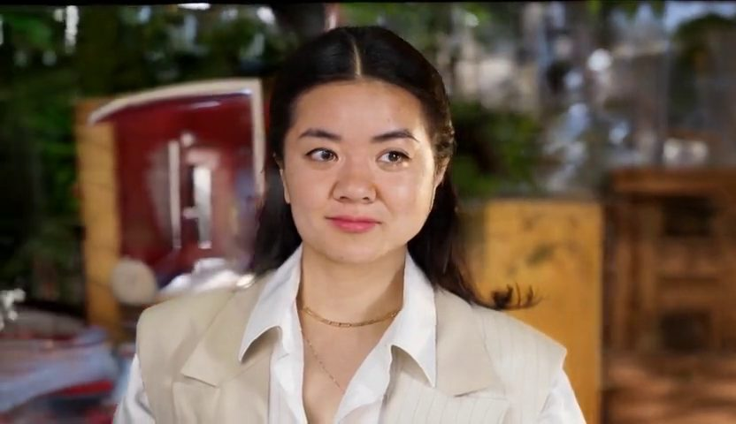
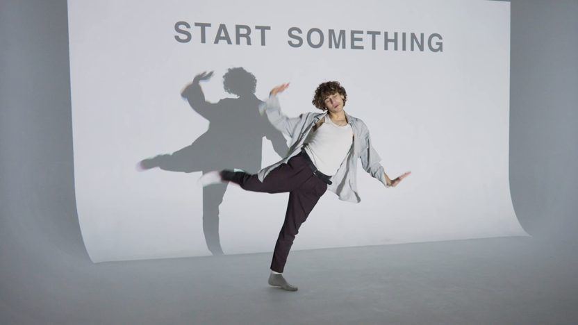
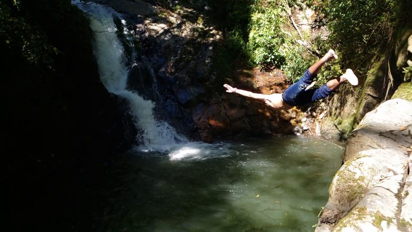
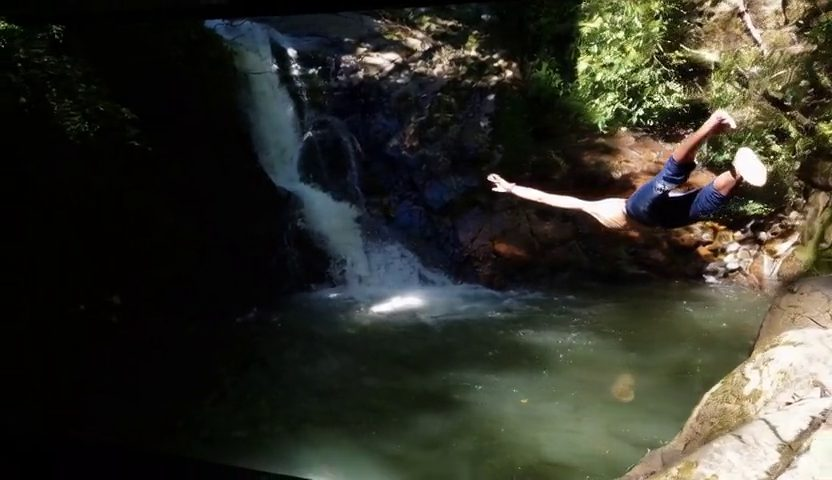

simple01_woman_talking_plants
源片t* · 原始姿态
ReCam · 实际末帧

打开完整尺寸文件 · 81 帧 · 全帧PTS保留 · 29 KB预览
历史好单段使用的Depth末帧

打开完整尺寸文件 · 81 帧 · 全帧PTS保留 · 30 KB预览
端点绑定及完整动作
原生末帧索引：80；SHA256：d412e734b57a981c2fc1a37f0e925085790711631bfd72b390bd4b627818af41
原模型比较 · Depth历史单段与接续对照 · 独立三步加条件诊断
每张“ReCam末帧”均独立解码自对应Stage2原生视频的最后一帧，未替换。请比较动作状态、人物视角、背景布局及环绕过程。数值请求右绕30°不等于画面实际达到30°；当前尚不能认定末帧本身就是退化根因。三条简单案例另展示历史好单段实际使用的Depth末帧，两类首图分别标注。
原生末帧索引：80；SHA256：d412e734b57a981c2fc1a37f0e925085790711631bfd72b390bd4b627818af41

原生末帧索引：80；SHA256：06887a96d82d65d3e68f20a70116baf4f4e1b6d17041e8bb877f55ee4ea7c3e3

原生末帧索引：80；SHA256：046885d9ca032d3322c2825f6ba5fceefad35414472dab353ee7b492dbe6343c

原生末帧索引：80；SHA256：994974ea59cbe1cebe98c51250ef3ad6d9a892b087d3d0d05078756dcd5e9042

原生末帧索引：80；SHA256：6a0955fe2df3fd11dbdffc53dcd37b3c503e6029f0a0960e1c0173977bde84f5


原生末帧索引：80；SHA256：7cf44f082ce5594c323e8fd49488d4d8f18174152264646d0655624ecfcabe1e